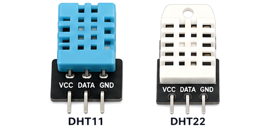
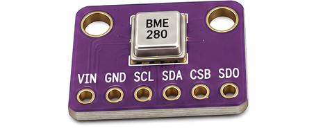
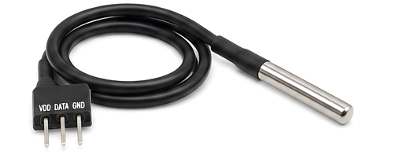
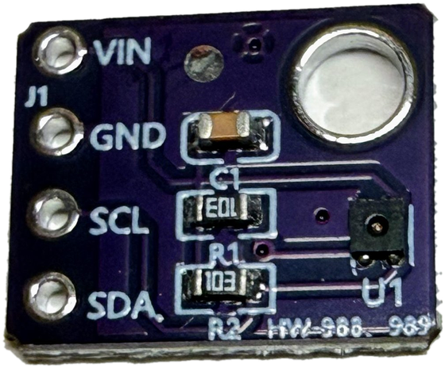

Temperature Sensor Comparison
Four ways to measure temperature with MicroPython on the Raspberry Pi Pico — DHT11/DHT22 · BME280 · DS18B20 · SHT40.
Four ways to measure temperature with MicroPython on the Raspberry Pi Pico — DHT11/DHT22 · BME280 · DS18B20 · SHT40.

Digital temperature and humidity sensors that use a single-wire protocol. Read them with MicroPython's built-in dht module. Wait at least 2 seconds between readings.

An advanced environmental sensor that measures temperature, humidity, and air pressure over I2C. Copy the BME280 driver file to your Pico before use.

A digital temperature sensor that uses the 1-Wire protocol. The stainless-steel probe is waterproof. Read it with MicroPython's onewire and ds18x20 modules.

A high-accuracy temperature and humidity sensor. Read it over I2C at address 0x44: send command 0xFD, then read 6 bytes. Power it from 3.3 V, never 5 V.